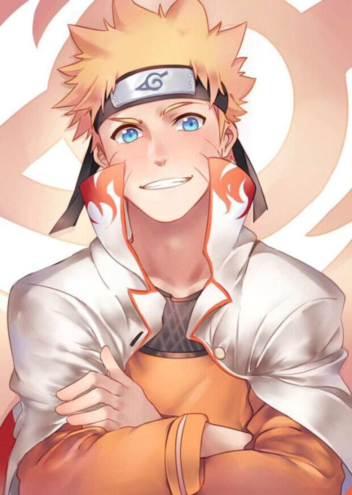
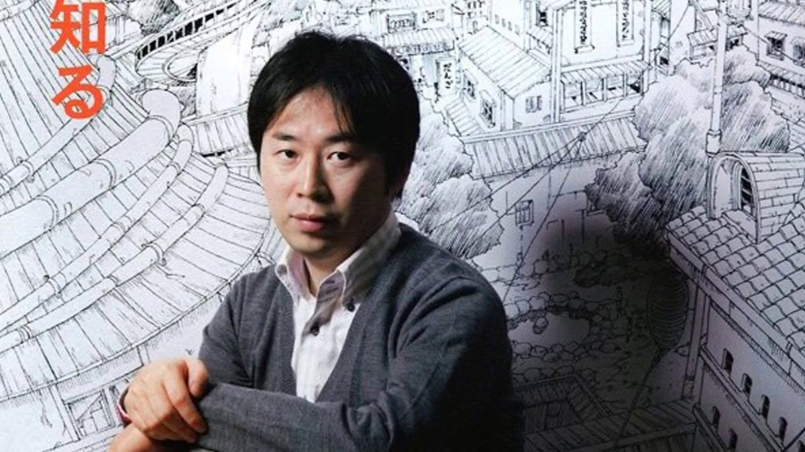
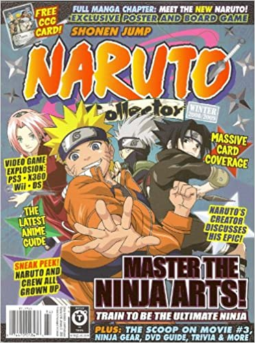
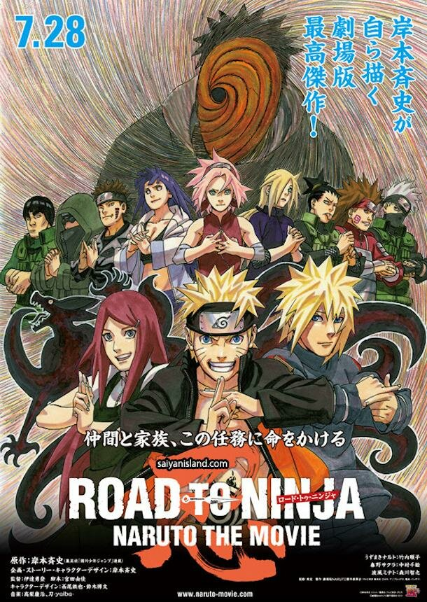
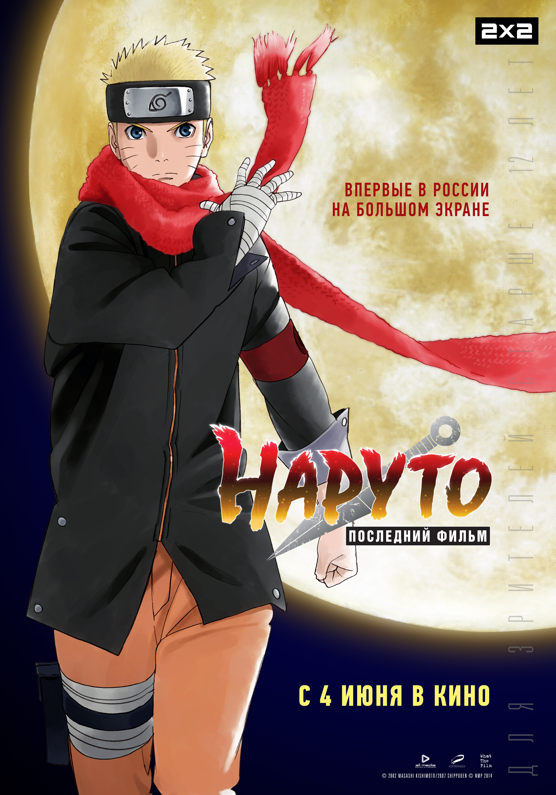
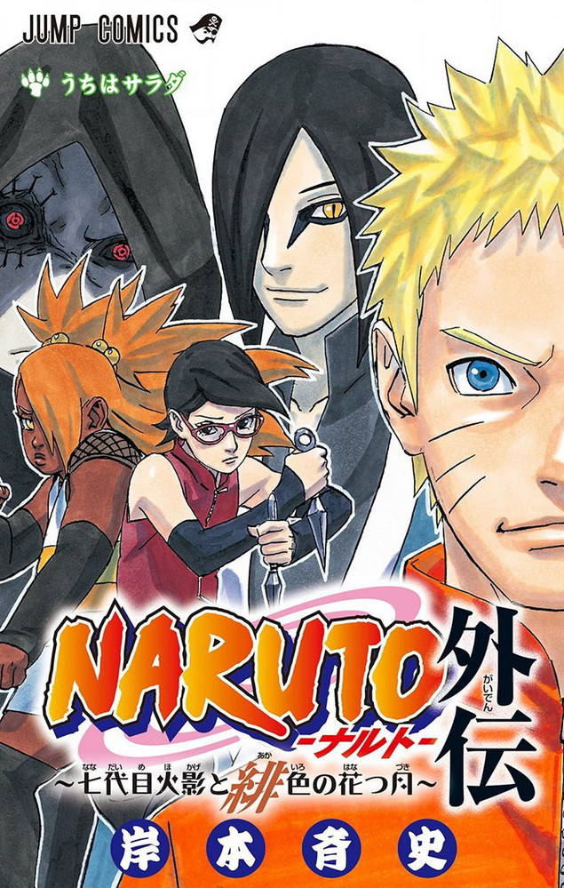
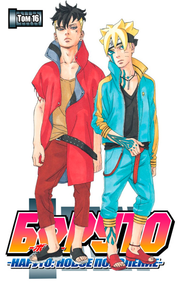

Masashi Kishimoto
Masashi Kishimoto (xtrox, Kishimoto Masashi s-a născut pe 8 noiembrie 1974.) este un artist manga japonez a cărui cea mai faimoasă lucrare, Naruto, a fost serializată din 1999 până în 2014 și a vândut peste 250 de milioane de exemplare în întreaga lume în 46 de țări începând cu mai 2019. Seria a fost adaptată în două Anime, precum și numeroase filme, jocuri video și mass-media conexe.
În plus față de manga Naruto, Kishimoto a organizat personal și două filme anime canonice, acesta din urmă: Naruto Movie și Boruto: Naruto Movie, și a scris mai multe nuvele dintr-o singură lovitură. În 2019, Kishimoto a scris Samurai 8: povestea lui Hachimaru, care s-a încheiat în martie 2020. Din mai 2016 până în octombrie 2020, a fost curator Boruto: Naruto of the Next Generation, o manga scrisă de Uke Kodachi și ilustrată de Mikio Ikemoto. În Noiembrie 2020, s-a anunțat că a preluat rolul scriitorului seriei, înlocuind Kodachi.
Citind manga de la o vârstă fragedă, Kishimoto a arătat dorința de a-și scrie propria manga, citând autorii Akira Toriyama și Katsuhiro Otomo ca principalele sale inspirații. Drept urmare, Kishimoto a petrecut câțiva ani lucrând la scrierea propriei sale manga senen pentru revista săptămânală Sh Jump, al cărei fan era.
Cariera
În septembrie 1999, o versiune serializată a lui Naruto a avut premiera în săptămânalul SH Jump 1999 No.43 și a devenit rapid un hit. S-a încheiat pe 10 noiembrie 2014, după mai bine de 15 ani de serializare, un total de 700 de capitole au fost colectate în 72 de volume.
Vânzările au depășit 113 milioane de exemplare în Japonia și peste 95 de milioane de exemplare în Statele Unite, începând cu volumul 36, peste 93 de milioane de exemplare au fost publicate în întreaga lume (în afara Japoniei și (SUA). Astfel, vânzările totale ale seriei sunt de aproximativ 301 milioane de exemplare.
Kishimoto a devenit, de asemenea, câștigătorul nominalizării "Newcomer of the Year" pentru seria din cadrul Agenției pentru Afaceri Culturale. A fost adaptat în două serii anime de succes, Naruto și Naruto Shipuden. Kishimoto a cerut ca Tetsuya Nishio să supravegheze designul personajelor lui Naruto atunci când manga a fost adaptată într-o serie anime. În Naruto, seria manga a devenit una dintre cele mai bune proprietăți ale Viz Media, Masashi Kishimoto reprezintă aproape 10% din toate vânzările de manga din Statele Unite în 2006. Al șaptelea volum al Viz a devenit primul manga care a primit premiul Quill când a câștigat premiul pentru cel mai bun roman grafic în 2006.
Răspunsul la succesul lui Naruto Kishimoto în Naruto Collector Winter 2007/2008 este că este " foarte bucuros că publicul American a acceptat și a înțeles ninja. Acest lucru arată că publicul American are un gust bun... pentru că înseamnă că pot accepta ceva anterior necunoscut pentru ei." În timp ce scria manga, Kishimoto l-a cunoscut pe Eichiro Oda, autorul Marelui Jackpot pe care l-a considerat rivalul său. Când Naruto a făcut-o în cele din urmă, Oda a lăsat un mesaj în ultimul volum al seriei recunoscându-l ca rival. Potrivit lui Kishimoto, "a fost atât de frumos".În plus, înainte de premiera adaptării anime, eroul meu Akademiyon a lăudat opera lui Kohei Horikoshi, crezând că va fi un succes în străinătate.În plus, Kishimoto s-a referit la Yoshihiro Togashi drept unul dintre artiștii săi preferați.
Pentru al nouălea film Naruto, drumul către Ninja: Naruto filmkIshimoto a fost responsabil atât pentru planificarea complotului, cât și pentru proiectarea personajelor.Pentru a promova filmul, Kishimoto a lucrat în mișcarea Naruto Comics, un DVD care arăta scene din manga în 3D, care a fost dat primilor 1,5 milioane de oameni care au mers la cinema.În ceea ce privește NARUTO în iulie 2012, Kishimoto i-a spus lui Tetsuya Nishio că seria va dura mai mult de un an și jumătate. Cu toate acestea, Kishimoto a recunoscut că acum se pare că manga va continua dincolo de acest termen.
De-a lungul anului 2014, Kishimoto a regizat ultimul: Naruto film, care va acționa ca o punte de legătură între încheierea seriei și epilog, oferind conceptul de poveste și designul personajelor. în Naruto, seria S-a încheiat în cele din urmă pe 10 noiembrie 2014. Filmul Naruto a avut premiera o lună mai târziu, pe 6 decembrie 2014.
Dupa Naruto
După închisoarea lui Naruto, Kishimoto s-a implicat în începutul unui proiect new era dedicat atât încheierii manga, cât și celei de-a 15-a aniversări. Pe ultima pagină a capitolului final, săptămânalul Sh Jump a anunțat că o miniserie spin-off, scrisă și de Kishimoto, va fi lansată în 2015. Mini-seria " Naruto: The Seventh Hokage and The Scarlet Spring "a rulat din aprilie până în iulie 2015, ceea ce a dus la premiera filmului" Boruto: Naruto " pe 7 August 2015, pe care l-a curatoriat și co-scris cu Ukiyo Kodachi.
De asemenea, a ilustrat mai multe romane ușoare de acțiune care au loc în aceeași perioadă de timp cu ultima. La cererea actriței Boruto Uzumaki Yuko Sanpei de a continua să facă filme despre Naruto, Kishimoto a spus că face o pauză și fizic nu o poate face

În August 2015, Kishimoto a anunțat că a finalizat deja ceea ce dorea să facă pentru următoarea sa serie manga. O manga SF care va prezenta un protagonist unic, iar Kishimoto a finalizat deja designul personajelor. El intenționează ca lucrarea să-l depășească pe Naruto în calitate și intenționează să lanseze seria lunar prin Revista digitală Shonen Jump plus datorită efortului fiscal necesar pentru o serie săptămânală. Kishimoto nu a decis încă când intenționează să anunțe oficial seria, deoarece vrea să petreacă timp cu familia sa.
În Noiembrie 2020, s-a anunțat că, după 51 de capitole și 13 Volume, Kodachi va renunța la funcția de scriitor al Boruto: Naruto Next Generations manga, în care Kishimoto preia toate sarcinile de scriere, iar Ikemoto continuă să lucreze ca ilustrator, începând cu capitolul 52 din următorul număr din decembrie al revistei V Jump, lansat pe 21 Noiembrie 2020.
Lucrarile
Coperta fiecarei creatii
Naruto